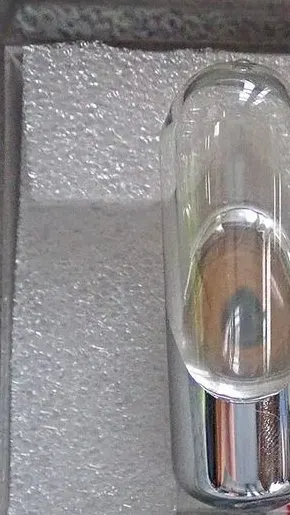
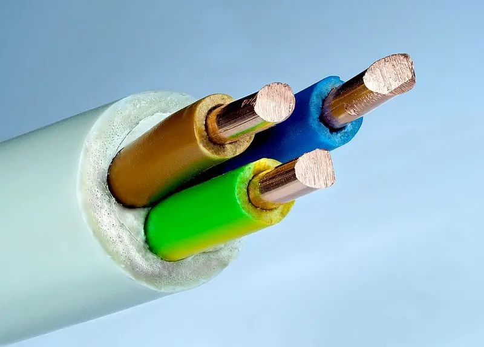

Cambridge Primary Checkpoint · Science 0097 · Stage 6 · Chemistry
Properties of Substances: Melting and Boiling Points, Gases, Conductors
Melting and boiling points as properties, how to find the state of a substance at any temperature, why gases have mass, and electrical and thermal conductors and insulators.
British & IGCSE › Checkpoint 6 › Checkpoint 6 Science — Complete Course
- Know that the temperature at which a substance changes state (its melting point and boiling point) is a property of that substance (6Cp.01)
- Know that gases have properties, including mass (6Cp.02)
- Understand that electrical conductivity and thermal conductivity are properties of a substance (6Cp.03)
1. What is a property?
A property is something that describes what a substance is like or how it behaves — for example its colour, hardness, whether it is magnetic, whether it floats. A property is the same every time for that substance: pure copper always conducts electricity; pure water always boils at the same temperature at normal air pressure. Scientists use properties to identify substances and to choose the right material for a job.
| Word / phrase | Meaning / use |
|---|---|
| property | خاصية — what a substance is like or how it behaves |
| melting point | درجة الانصهار — the temperature at which a solid melts (or a liquid freezes) |
| boiling point | درجة الغليان — the temperature at which a liquid boils |
| state of matter | حالة المادة — solid, liquid or gas |
| mass | الكتلة — how much matter something has; measured in g or kg |
| electrical conductor / insulator | موصل / عازل للكهرباء |
| thermal conductor / insulator | موصل / عازل للحرارة |
| particle | جسيم — a tiny piece that all substances are made of |
2. Melting point and boiling point
The melting point is the temperature at which a solid turns into a liquid. The same temperature is the freezing point (liquid → solid). The boiling point is the temperature at which a liquid boils and turns into a gas quickly. Each substance has its own melting point and boiling point — that is why they are properties.
| Substance | Melting point (°C) | Boiling point (°C) | State at room temperature (20 °C) |
|---|---|---|---|
| oxygen | −218 | −183 | gas |
| ethanol (a type of alcohol) | −114 | 78 | liquid |
| mercury | −39 | 357 | liquid (the only metal that is liquid at room temperature) |
| water | 0 | 100 | liquid |
| iron | 1538 | 2862 | solid |

How to work out the state at any temperature — compare the temperature with the melting point (mp) and the boiling point (bp):
- Temperature lower than the mp → solid.
- Temperature between the mp and the bp → liquid.
- Temperature higher than the bp → gas.
−114 is lower (colder) than −39, because it is further below zero. Draw a quick number line if you are unsure. Example: at −50 °C, is mercury solid or liquid? −50 is lower than −39 (its mp), so mercury is solid.
Using melting point to test purity: pure water freezes at exactly 0 °C and boils at 100 °C. If salt is dissolved in it, it freezes below 0 °C and boils above 100 °C. So if a 'water' sample boils at 103 °C, it is not pure water. (This is why salt is spread on icy roads in cold countries.)
كل مادة ليها درجة انصهار (melting point) ودرجة غليان (boiling point) خاصة بيها، وده اسمه خاصية (property). لو درجة الحرارة أقل من درجة الانصهار ← صلب solid. بين الانصهار والغليان ← سائل liquid. أعلى من الغليان ← غاز gas. وخلي بالك: −114 أبرد من −39.
3. Gases have properties — including mass
Gases are hard to notice because most are invisible, but they are real substances made of particles, just like solids and liquids. In a gas the particles are far apart and move quickly in all directions.
| Property of a gas | Evidence you can see |
|---|---|
| has no fixed shape and spreads to fill its container | the smell of perfume spreads across a room |
| can be squashed (compressed) into a smaller space | you can push in the plunger of a sealed syringe full of air, but not one full of water |
| can flow | wind; gas flowing from a cooker hob |
| takes up space | an 'empty' upturned glass pushed into water stays dry inside — air is in the way |
| has mass | a ball weighs more after it is pumped up with air |
Each gas particle has a tiny mass, so a gas has mass. One litre of air has a mass of about 1.2 g — small, but it can be measured on a sensitive balance. Another example: an unopened bottle of fizzy drink has a greater mass than the same bottle after it has been opened and left to go flat, because carbon dioxide gas has escaped.
A container 'full of air' is not empty. Air is a mixture of gases (mainly nitrogen and oxygen) and it has mass and takes up space.
4. Electrical and thermal conductivity
Electrical conductivity describes whether a substance lets electricity pass through it. An electrical conductor lets electricity flow; an electrical insulator does not. Thermal conductivity describes whether a substance lets heat (thermal energy) pass through it easily. A thermal conductor lets heat pass quickly; a thermal insulator slows heat down. Both are properties: they depend on what the substance is.
| Good conductors | Insulators (poor conductors) | |
|---|---|---|
| Electricity | all metals (copper, aluminium, iron, steel, gold, silver); graphite (pencil 'lead') — a non-metal that conducts | plastic, rubber, wood, glass, dry paper, fabric, air |
| Heat | metals — especially copper and aluminium | plastic, wood, wool, polystyrene, glass, air |
Testing electrical conductivity: put the material in the gap of a simple circuit. If the lamp lights, the material is an electrical conductor.
| Object | Property used | Why |
|---|---|---|
| electrical wire: copper inside, plastic coating outside | copper = electrical conductor; plastic = electrical insulator | electricity flows along the copper; the plastic stops it reaching your hand |
| saucepan: metal base, plastic or wooden handle | metal = thermal conductor; plastic/wood = thermal insulator | heat passes quickly to the food; the handle stays cool enough to hold |
| woollen jumper, double-glazed window | trapped air = thermal insulator | slows heat leaving your body or the house |
| plug pins made of brass (a metal) | electrical conductor | carry electricity into the appliance |

5. Investigation: which metal is the best thermal conductor?
Rods of different materials were stood in a beaker of hot water. A small bead was stuck to the top of each rod with wax. When heat travels up the rod, the wax melts and the bead falls. The time for each bead to fall was measured.
| Material of rod | Time for bead to fall (s) |
|---|---|
| copper | 35 |
| aluminium | 55 |
| steel | 140 |
| glass | did not fall in 10 minutes |
- Independent variable: the material of the rod. Dependent variable: the time for the bead to fall.
- Control variables: same length and thickness of rod, same temperature of water, same amount of wax, same size of bead, same depth in the water.
- Conclusion: copper is the best thermal conductor (shortest time); glass is a thermal insulator.
- Risk: hot water can scald — stand the beaker on a flat surface, do not lean over it, and let rods cool before touching.
Worked examples
Worked example 1 — Substance X melts at −7 °C and boils at 59 °C. What is its state at (a) −20 °C (b) 25 °C (c) 80 °C? [3 marks]
- (a) −20 is lower than −7 (the mp) → solid.
- (b) 25 is between −7 and 59 → liquid.
- (c) 80 is higher than 59 (the bp) → gas.
Common mistake: thinking −20 is 'higher' than −7 because 20 is bigger than 7.
Worked example 2 — Use the table of substances. Which substance has a boiling point 22 °C lower than water's? [1 mark]
Answer: 100 − 22 = 78 °C, which is the boiling point of ethanol.
Worked example 3 — Mona weighs a bottle of fizzy water: 520 g. She opens it, leaves it overnight, puts the lid back on and weighs it again: 516 g. (a) What mass of gas escaped? (b) What does this show about gases? [2 marks]
- (a) 520 − 516 = 4 g.
- (b) The gas (carbon dioxide) that escaped had mass — gases have mass.
Worked example 4 — Explain why the handle of a saucepan is made of plastic but the base is made of metal. [2 marks]
Answer: the metal base is a good thermal conductor, so heat passes quickly to the food (1); plastic is a thermal insulator, so the handle does not get too hot to hold (1). Common mistake: writing 'plastic does not conduct electricity' — the question is about heat.
Worked example 5 — Omar tests a pencil lead (graphite) in the conductivity tester and the lamp lights. He says, "Graphite must be a metal." Is he correct? [1 mark]
Answer: No — graphite is a non-metal that conducts electricity. Most non-metals are insulators, but graphite is an exception.
- Mixing up melting point and boiling point when working out a state — write 'mp' and 'bp' next to the numbers first.
- Getting negative temperatures the wrong way round (−50 °C is colder than −10 °C).
- Saying gases 'weigh nothing' or 'are empty space'. Gases have mass.
- Confusing electrical and thermal conductivity. Read the question: electricity or heat?
- Saying 'all metals are magnetic' or 'all non-metals are insulators' — iron is magnetic but copper is not; graphite conducts.
- Saying wood or plastic 'stops heat completely'. Insulators slow down heat flow.
- A table of melting and boiling points: give the state of a substance at a stated temperature, or say which substance is a gas/liquid at room temperature.
- Calculate a difference: a temperature difference, or a change in mass (e.g. a ball before and after pumping). Show the subtraction.
- Explain a choice of material using the words conductor / insulator and electrical / thermal.
- Investigation: name variables, read a results table, choose the best conductor, suggest a control variable or a safety precaution.
- Complete or read a circuit used to test conductivity — know the symbols for a cell and a lamp.
Practice
- Each substance has its own melting point and boiling point — these are properties.
- Below mp → solid; between mp and bp → liquid; above bp → gas. Watch negative numbers.
- Gases are made of particles that are far apart; gases fill containers, can be squashed, flow and have mass.
- Metals and graphite conduct electricity; plastic, rubber, wood, glass and air are electrical insulators.
- Metals are good thermal conductors; plastic, wood, wool and trapped air are thermal insulators.
All pages in this course
Start here
- Checkpoint 6 Science: The Test and How to Prepare
- Thinking and Working Scientifically: Investigations, Variables, Tables and Graphs
Biology
- The Heart and Circulatory System
- The Lungs and Respiratory System
- Human Reproductive System and Puberty
- Diseases, Hygiene and the Body's Defences
- Food Chains, Food Webs, Energy and Toxins
Chemistry
- Properties of Substances: Melting and Boiling Points, Gases, Conductors
- Reversible Changes and Dissolving
- Boiling and Evaporation
- Chemical Reactions: Reactants, Products and Evidence
Physics
- Mass, Weight and Gravity
- Force Diagrams and Forces on Moving Objects
- Floating and Sinking
- Light: Reflection and Refraction
- Electric Circuits, Symbols, Series and Parallel
Earth and space
Practice tests